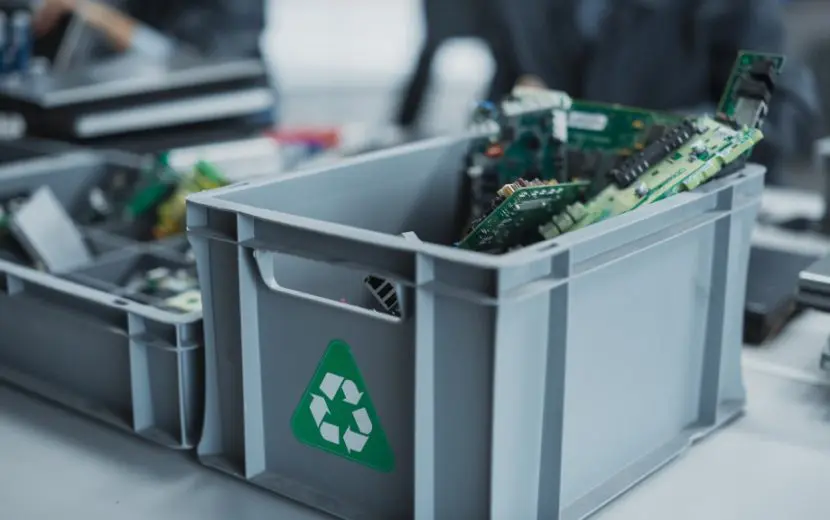

Recyclage en materiaalverlies
Terugwinning, beperkingen en verliezen aan het einde van de keten.
Tantalum is al sinds 2011 door de EU erkend als kritisch rauw materiaal, daarnaast is het ook een conflictmineraal.
Tantalum heeft meerdere unieke eigenschappen die onvervangbaar zijn, zoals een goede prestatie onder hoge temperaturen, hoge corrosiebestendigheid, en een hoge diëlektrische constante.
Er moet globaal gestreefd worden naar een circulaire, duurzame economie. Recyclage speelt hierbij een cruciale rol.
Beschrijf hier de afbeelding voor stap
Stap 1 van 7
Economische haalbaarheid
Binnen PWB's ligt de focus op edelmetalen, met een hogere en stabielere prijs die in grotere concentraties aanwezig zijn. Het recyclageproces van de condensatoren mag dus niet in de weg staan van de recyclage van edelmetalen. Daarnaast is de condensator zeer complex wat recyclage nog moeilijker maakt.
Er zijn enkele mogelijkheden waarop de recyclage wel economisch haalbaar kan worden. Uiteraard kan een prijsstijging hiervoor zorgen, dit kan zijn door verhoogde vraag of een stijging in schaarstheid. Daarnaast kunnen nieuwe technieken de efficiëntie verbeteren of het proces versnellen. Een laatste optie is dat internationale organisaties zoals de EU recyclage van kritische rauwe materialen kunnen stimuleren via economische incentieven.

Het potentiaal
Deze recyclage kan deel uitmaken van het concept van "urban mining", waarbij waardevolle grondstoffen gewonnen worden uit stedelijk afval. Dit wordt nu al gedaan, en onder andere netwerkrouters of laptops waar allebei tantalumcapacitoren inzitten worden hierin ook gebruikt, met respectievelijk 3g en 1g per unit. Hierdoor bestaat er al een goede basis voor inzameling van de e-waste
Momenteel is er ongeveer 3-4 kiloton tantalumgebruik per jaar, waarvan 43.6% naar capacitoren gaat, moesten deze allemaal gerecycleerd worden neemt dat een grote druk van de mijnbouw af.
